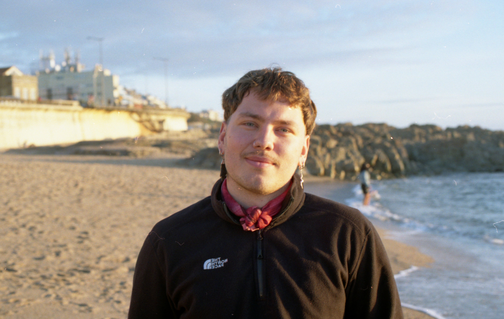

Der Anfang Ihres Weges
Die ersten Schritte in der Beratung – sicher, klar und in Ihrem eigenen Tempo.
Psychologische Beratung in Berlin & online
Manchmal hilft es, innezuhalten und gemeinsam einen anderen Blick auf das zu werfen, was gerade schwer ist.
Kennenlerngespräch vereinbaren
Ich bin Florian Gütschow, klinischer Psychologe (M.Sc.) und Psychotherapeut in Ausbildung (PiA), und biete psychologische Sitzungen für Erwachsene in Berlin und online an.
Nach mehreren Jahren des Studiums im Ausland und internationalen Studiengängen habe ich meinen beruflichen Schwerpunkt in Berlin gefunden. Seit 2023 bin ich in der Ausbildung zum Psychologischen Psychotherapeuten an der Berliner Fortbildungsakademie. Meine Ausbildung ist stark international geprägt, unter anderem durch englischsprachige und interkulturelle Studienprogramme.
Ich habe meinen Bachelor in Psychologie (Cum Laude) an der Radboud Universität Nijmegen und meinen Master in Klinischer Psychologie (Cum Laude) an der Universität Leiden abgeschlossen. Beide Universitäten zählen in internationalen Rankings regelmäßig zu den führenden Einrichtungen im Fach Psychologie.
Zusätzlich habe ich eine Ausbildung als Mindfulness Coach (Laudius) absolviert und spezialisiere mich derzeit im Bereich der Psychotraumatherapie bei der Arbeitsgemeinschaft für Wissenschaftliche Psychotherapie.
Ich arbeite nach den aktuellen berufsethischen Richtlinien der Psychologie und auf Grundlage wissenschaftlich fundierter Verfahren. Wie in der Psychotherapie üblich, arbeite ich in regelmäßiger Supervision.
In der Arbeit bin ich ruhig, offen und direkt. Mir ist es wichtig, eine klare, gemeinsame Sprache zu finden – und einen Raum zu schaffen, in dem alles Platz hat. Ich arbeite auf Deutsch und Englisch mit Erwachsenen aus unterschiedlichsten kulturellen Hintergründen und Lebensrealitäten.
Qualifikationen & beruflicher Rahmen
Die psychologische Beratung, die ich anbiete, zielt darauf ab, einen urteilsfreien Raum zu schaffen. In diesem Raum schauen wir uns gemeinsam Vergangenes, Gegenwärtiges und das, was sich verändern darf, an. Ihre Bedürfnisse, Ziele und Ressourcen stehen dabei im Mittelpunkt.
Ich arbeite modern, transparent und auf Augenhöhe – mit Zeit und Geduld, damit jede:r Mensch ankommen und Vertrauen aufbauen kann. Dabei orientiere ich mich an wissenschaftlich fundierten Ansätzen und an dem, was für Sie persönlich hilfreich ist.
Ich habe mit Menschen aus vielen verschiedenen Regionen, Kulturen und Religionen gearbeitet. Unterschiedliche Prägungen und Hintergründe formen die Vorstellungen und die Sprache, mit der wir unser eigenes psychisches Erleben beschreiben und erklären. Eine gute therapeutische Beziehung nimmt sich Zeit, um eine gemeinsame Sprache und ein gemeinsames Verständnis zu finden. Nur so kann sie gemeinsam vorankommen.
Daher ist mir ein kultursensibler Ansatz wichtig, mit Offenheit für verschiedene Religionen, Werte und Lebensmodelle.
Ich begleite Menschen in städtischen Kontexten – in akuten Krisen, bei Stress, Veränderung, Identitätsfragen, Beziehungen und dem, was dazwischen liegt. Viele der Menschen, mit denen ich arbeite, bewegen sich zwischen Sprachen, Kulturen und Lebensmodellen.
Ich bin offen für die Begleitung bei ernsthaften psychischen Belastungen ebenso wie für Themen rund um persönliches Wachstum, Selbstentwicklung und Orientierung.
Damit Sie wissen, wie sich die ersten Sitzungen gestalten, möchte ich Ihnen hier einen Überblick geben.
Die ersten Schritte in der Beratung – sicher, klar und in Ihrem eigenen Tempo.
Die erste Sitzung dient dazu, Ihre aktuelle Situation zu verstehen und eine sichere Arbeitsbeziehung aufzubauen. Wir schauen uns an, was Sie hierher führt, und prüfen gemeinsam, ob eine Zusammenarbeit für beide Seiten passend ist.
Die zweite Sitzung ist ein strukturiertes Erstgespräch. Wir erkunden Ihre persönliche Geschichte, aktuelle Herausforderungen, Beziehungsmuster, Bewältigungsstrategien sowie Ihre Wünsche und Ziele.
Auf Basis unserer ersten Gespräche vereinbaren wir, wie wir weiterarbeiten möchten. Manche Menschen entscheiden sich für eine fortlaufende Begleitung, andere für einzelne Sitzungen zu bestimmten Themen.
Menschen kommen mit sehr unterschiedlichen Anliegen in die psychologische Beratung. Dazu gehören konkrete psychische Belastungen ebenso wie Fragen rund um Identität, Beziehungen, Selbstwert, Veränderung und das Leben zwischen verschiedenen kulturellen und sprachlichen Räumen.
Manchmal ist der Körper plötzlich in Alarmbereitschaft: Das Herz schlägt schneller, der Atem wird flach, Gedanken kreisen oder eine Situation wirkt viel bedrohlicher, als sie von außen betrachtet erscheint. Vielleicht vermeiden Sie bestimmte Orte, Wege, Menschen oder Tätigkeiten. Oft kommt zusätzlich Scham dazu: die Frage, warum gerade etwas, das andere scheinbar leicht bewältigen, so viel Angst auslöst.
CBT kann helfen, besser zu verstehen, wie Angst entsteht und wodurch sie im Alltag aufrechterhalten wird. Gemeinsam schauen wir auf Gedanken, Körperreaktionen und Vermeidungsgewohnheiten. Wenn es für Sie passend ist, können wir uns angstauslösenden Situationen in kleinen, gut vorbereiteten Schritten nähern – immer in Ihrem Tempo und mit einem klaren Plan. Entlastung kann bedeuten, dass Angst weniger bestimmt, welche Wege Sie gehen und was Sie sich zutrauen.
Alles kann schwerer wirken als sonst. Dinge, die früher Freude gemacht haben, fühlen sich leer an; selbst kleine Aufgaben kosten viel Kraft. Vielleicht ziehen Sie sich zurück, schlafen schlechter, fühlen sich innerlich wie blockiert oder fragen sich, warum Sie „einfach nicht anfangen“ können. Erschöpfung ist nicht Faulheit und kein persönliches Versagen.
CBT kann helfen, die Kreisläufe zu erkennen, die Niedergeschlagenheit und Erschöpfung verstärken können: belastende Gedanken, Rückzug, Überforderung oder ein Alltag, in dem kaum noch etwas Kraft gibt. Gemeinsam entwickeln wir kleine, realistische Schritte für mehr Struktur, Selbstfürsorge und hilfreiche Erfahrungen. Entlastung zeigt sich oft zuerst in kleinen Veränderungen: eine Aufgabe, die wieder machbar wird, ein Moment echter Ruhe oder ein freundlicherer Umgang mit sich selbst.
Eine Trennung, Verlust, Konflikte, berufliche Unsicherheit, Krankheit oder eine andere einschneidende Veränderung kann das Gefühl auslösen, den Boden unter den Füßen zu verlieren. Gedanken drehen sich im Kreis, Schlaf und Konzentration leiden, und Entscheidungen wirken plötzlich kaum noch möglich. Auch wenn andere die Situation vielleicht „nicht so schlimm“ finden: Eine Krise kann sich sehr allein anfühlen.
CBT kann helfen, die Situation zu sortieren: Was ist gerade tatsächlich dringend? Was liegt außerhalb Ihres Einflusses? Welche Gedanken verstärken den Druck, und was würde im Moment wirklich entlasten? Gemeinsam entwickeln wir konkrete Schritte für den Alltag und Strategien gegen Grübeln, starke Anspannung und emotionale Überforderung. Entlastung kann heißen, wieder einen nächsten Schritt zu sehen, statt sofort eine Lösung für alles finden zu müssen.
Manche Erfahrungen liegen lange zurück und fühlen sich trotzdem nicht wirklich vorbei an. Bestimmte Bilder, Gerüche, Orte, Körperempfindungen oder Begegnungen können plötzlich Angst, Scham, Wut oder Erstarrung auslösen. Vielleicht vermeiden Sie Erinnerungen, Gespräche oder Situationen, die daran erinnern könnten. Manche Menschen fühlen sich dauerhaft angespannt, innerlich abgetrennt oder schnell überfordert.
CBT kann helfen, die heutigen Auswirkungen belastender Erfahrungen besser zu verstehen und sicherer mit Erinnerungen, Anspannung und Vermeidung umzugehen. Ein erster Schritt ist immer Stabilisierung: Wir achten auf Grenzen, Ressourcen und Sicherheit im Alltag, damit Sie nicht überfordert werden. Entlastung kann bedeuten, dass Erinnerungen seltener ungebeten in den Alltag drängen, der Körper schneller wieder zur Ruhe kommt oder bestimmte Situationen weniger Macht über Sie haben.
Manchmal fühlt sich ein Verhalten zunächst wie eine schnelle Hilfe an: Alkohol, Cannabis, andere Substanzen, Essen, Glücksspiel, Pornografie, Kaufen, Arbeiten oder ständiges Scrollen können kurzfristig beruhigen, ablenken oder Leere füllen. Später können Scham, Konflikte, gesundheitliche Folgen oder das Gefühl dazukommen, die Kontrolle zu verlieren. Viele Menschen versuchen lange, allein damit aufzuhören.
CBT kann helfen, genauer hinzuschauen: Was löst das Verhalten aus? Was gibt es kurzfristig – und was kostet es langfristig? Gemeinsam suchen wir nach Alternativen, die im Alltag wirklich umsetzbar sind. Dabei geht es nicht um moralische Bewertung, sondern um Verständnis, Sicherheit und neue Handlungsmöglichkeiten. Entlastung kann bedeuten, dass zwischen Impuls und Handlung wieder ein Moment Wahlfreiheit entsteht.
Der Alltag kann sich zu laut, zu schnell, zu voll oder schwer organisierbar anfühlen. Reize, Übergänge, Planung, Zeitgefühl oder soziale Situationen kosten möglicherweise viel Energie. Manche Menschen verlieren sich in Gedanken, beginnen vieles gleichzeitig oder kämpfen mit Überforderung und Erschöpfung. Gleichzeitig können intensive Interessen, Kreativität, Genauigkeit, besondere Wahrnehmung oder ein eigener Blick auf Zusammenhänge große Stärken sein.
CBT kann helfen, alltagstaugliche Strategien für Planung, Prioritäten, Reizschutz, Pausen und einen freundlicheren Umgang mit sich selbst zu entwickeln. Dabei geht es nicht darum, Sie in ein fremdes Bild von „Normalität“ zu pressen. Gemeinsam schauen wir darauf, welche Strukturen und Kommunikationsformen zu Ihnen passen. Entlastung kann heißen, den Alltag weniger gegen sich selbst organisieren zu müssen.
Gefühle können sehr schnell und sehr intensiv kommen. Nähe zu anderen Menschen kann gleichzeitig wichtig und beängstigend sein; Konflikte oder kleine Veränderungen in Beziehungen können große Unsicherheit auslösen. Vielleicht wechseln Selbstzweifel, Wut, Leere, Scham oder Angst vor Verlassenwerden einander ab. Das ist nicht „zu viel“ oder „dramatisch“, sondern oft ein Zeichen dafür, dass Ihr Nervensystem lange sehr viel tragen musste.
CBT kann helfen, belastende Gedanken, Auslöser und wiederkehrende Beziehungsmuster besser zu verstehen. DBT-orientierte Übungen können unterstützen, intensive Gefühle zu regulieren, Grenzen zu setzen und Bedürfnisse verständlich auszudrücken. Entlastung kann sich darin zeigen, dass Gefühle nicht sofort jede Handlung bestimmen und Konflikte weniger schnell eskalieren.
Die innere Kritik ist oft schneller als jede Anerkennung. Fehler fühlen sich vielleicht wie ein Beweis an, nicht gut genug zu sein. Aufgaben werden aufgeschoben, weil der Anspruch, sie perfekt zu machen, so viel Druck erzeugt, dass der Anfang kaum möglich ist. Das kann zu Schuldgefühlen führen – und diese machen es oft noch schwerer.
CBT kann helfen, die Gedanken und Regeln zu erkennen, die den Druck aufrechterhalten: etwa „Ich darf keinen Fehler machen“ oder „Wenn ich nicht perfekt bin, bin ich wertlos“. Gemeinsam entwickeln wir kleine, machbare Schritte gegen Vermeidung und Überforderung. Entlastung kann bedeuten, Dinge anfangen zu können, bevor Sie sich vollständig bereit fühlen, und Fehler weniger persönlich zu nehmen.
Beziehungen können gleichzeitig ein Ort von Nähe und von Anspannung sein. Vielleicht entstehen immer wieder Missverständnisse, Sie sagen zu selten Nein, ziehen sich bei Konflikten zurück oder haben das Gefühl, für die Gefühle anderer verantwortlich zu sein. Manchmal ist der Wunsch nach Nähe groß, während gleichzeitig Angst besteht, verletzt, kontrolliert oder verlassen zu werden.
CBT kann helfen, wiederkehrende Beziehungsmuster und die Gedanken dahinter besser zu verstehen. Gemeinsam üben wir, eigene Bedürfnisse und Grenzen klarer wahrzunehmen und auszudrücken. Entlastung kann bedeuten, weniger nachträglich zu grübeln, klarer Nein sagen zu können und schwierige Gespräche nicht mehr so lange aufzuschieben.
Fragen zur sexuellen Orientierung, geschlechtlichen Identität oder zum eigenen Ausdruck können mit Unsicherheit, Scham oder Angst vor Ablehnung verbunden sein. Manche Menschen haben gelernt, Teile von sich zu verstecken, anzupassen oder infrage zu stellen. Belastung entsteht häufig nicht durch die Identität selbst, sondern durch Ausgrenzung, Unsichtbarkeit, Diskriminierung oder fehlende Unterstützung.
CBT kann helfen, belastende Selbstzweifel, innere Abwertung und Erwartungen anderer besser einzuordnen. Gemeinsam schauen wir darauf, welche Erfahrungen Ihr Selbstbild geprägt haben und was Ihnen hilft, sich sicherer und stimmiger zu fühlen. Die Beratung ist queer- und transaffirmativ: Ihre Identität ist kein Problem, das gelöst werden muss. Entlastung kann bedeuten, Entscheidungen stärker an den eigenen Werten auszurichten.
Zwischen Kulturen, Sprachen und Erwartungen zu leben, kann bereichernd sein – und gleichzeitig viel Kraft kosten. Vielleicht haben Sie das Gefühl, in verschiedenen Kontexten unterschiedliche Versionen von sich selbst zeigen zu müssen. Familiäre Erwartungen, Migrationserfahrungen, Rassismus, Unsicherheit oder die Frage „Wo gehöre ich hin?“ können den Alltag stark prägen. Manchmal fühlt sich das Leben an, als müsse man ständig übersetzen – nicht nur sprachlich.
CBT kann helfen, belastende Gedanken und Stressreaktionen im Zusammenhang mit diesen Erfahrungen besser zu verstehen. Dabei betrachten wir nicht nur die einzelne Person, sondern auch Familie, Sprache, Geschichte, Zugehörigkeit und gesellschaftliche Bedingungen. Gemeinsam entwickeln wir Wege, mit Druck, Konflikten und widersprüchlichen Erwartungen umzugehen. Entlastung kann heißen, weniger das Gefühl zu haben, sich für eine Seite entscheiden zu müssen.
Es muss kein akutes Problem geben, damit Unterstützung sinnvoll sein kann. Vielleicht spüren Sie, dass sich etwas verändern soll: mehr Klarheit, Ruhe, Sinn, Selbstvertrauen oder ein Leben, das besser zu Ihnen passt. Gleichzeitig können alte Muster, familiäre Erwartungen, Ängste oder Gewohnheiten es schwer machen, neue Wege wirklich zu gehen.
CBT kann helfen, wiederkehrende Gedanken und Verhaltensmuster sichtbar zu machen: Was hält Sie fest, obwohl Sie eigentlich etwas verändern möchten? Gemeinsam prüfen wir, was Ihnen wichtig ist, und übersetzen Wünsche in kleine, konkrete Schritte. Entlastung kann bedeuten, weniger im Autopiloten zu leben und mehr das Gefühl zu haben, eigene Entscheidungen zu treffen.
Die Zusammenarbeit beginnt ohne Druck: Wir lernen uns kennen, klären den Rahmen und entscheiden erst dann, ob weitere Sitzungen passend sind.
Ein erstes, unverbindliches Gespräch, um Ihre Fragen zu klären und herauszufinden, ob eine Zusammenarbeit passend sein könnte.
15–20 Min. · kostenlos · online
Kennenlerngespräch vereinbarenEin geschützter Rahmen, in dem wir Ihre Themen in Ihrem Tempo betrachten und mit konkreten Möglichkeiten arbeiten.
50 Min. · 95 € · Selbstzahlende · online / vor Ort in Berlin
Bitte sagen Sie Termine mindestens 48 Stunden vorher ab, damit ich die Zeit weitergeben kann. Bei späterer Absage oder Nichterscheinen kann ein Ausfallhonorar in Höhe von 95 € berechnet werden – sofern der Termin nicht anderweitig vergeben werden kann.
48 Std. vorher · kostenfrei
Wenn Sie studieren, eine Fluchtgeschichte haben oder aus anderen Gründen finanziell stark belastet sind, schreiben Sie mir bitte direkt. Wir schauen gemeinsam, was möglich ist.
Es braucht nicht viel, um anzufangen. Ein Termin ist ein Angebot an sich selbst – ohne Druck, ohne Perfektion. Wenn der Zeitpunkt passt, können Sie hier direkt ein Kennenlerngespräch vereinbaren.
Wenn Ihre Frage hier nicht beantwortet wird, können wir sie im Kennenlerngespräch in Ruhe besprechen.
Ich biete psychologische Beratung an. Die Berufsbezeichnung „Psychotherapeut:in“ ist an eine Approbation gebunden; heilkundliche Psychotherapie wird über diese Website nicht angeboten. Meine Arbeit baut auf meiner klinisch-psychologischen Ausbildung, meiner fortgeschrittenen psychotherapeutischen Ausbildung und regelmäßiger Supervision auf.
Nein. Ich biete psychologische Beratung an, keine heilkundliche Psychotherapie. Die Beratung kann dennoch fundiert, strukturiert und an Ihren persönlichen Themen ausgerichtet sein.
In 15–20 Minuten klären wir Ihre Fragen, den organisatorischen Rahmen und ob eine Zusammenarbeit für beide Seiten passend wirkt. Das Gespräch ist kostenlos und unverbindlich.
Beides ist möglich: online oder vor Ort in Berlin. Wir besprechen gemeinsam, welches Format für Ihre Situation stimmig ist.
Eine Beratungssitzung dauert 50 Minuten und kostet 95 €. Wenn Sie finanziell stark belastet sind, schreiben Sie mir bitte direkt – wir schauen gemeinsam, was möglich ist.
Nach der Sitzung erhalten Sie eine Rechnung. Die Zahlung erfolgt per Überweisung; dafür ist kein Zahlungsanbieter und keine zusätzliche Zahlungsgebühr auf der Website erforderlich.
Ja. Bei einer Absage mindestens 48 Stunden vor dem Termin entstehen keine Kosten. Bei späterer Absage kann ein Ausfallhonorar anfallen, wenn der Termin nicht neu vergeben werden kann.
Nein. Dieses Angebot ist keine Notfallversorgung. In einer akuten Krise wenden Sie sich bitte an den Notruf 112, den Berliner Krisendienst oder eine psychiatrische Notaufnahme.
Vor Veröffentlichung vervollständigen
Dieser Bereich ist für den privaten Entwurf vorbereitet. Vor der Veröffentlichung werden hier Name und Praxisanschrift, E-Mail-Adresse, gegebenenfalls zuständige Aufsichtsbehörde, Berufsbezeichnung und berufsrechtliche Regelungen sowie eine vollständige Datenschutzerklärung ergänzt.
wide minds
Ein unverbindliches Kennenlerngespräch kann online vereinbart werden. Die Kontaktadresse und rechtlichen Angaben folgen vor der Veröffentlichung.
Dieser Entwurf ist nicht öffentlich und nicht für die Kontaktaufnahme oder Notfälle bestimmt.